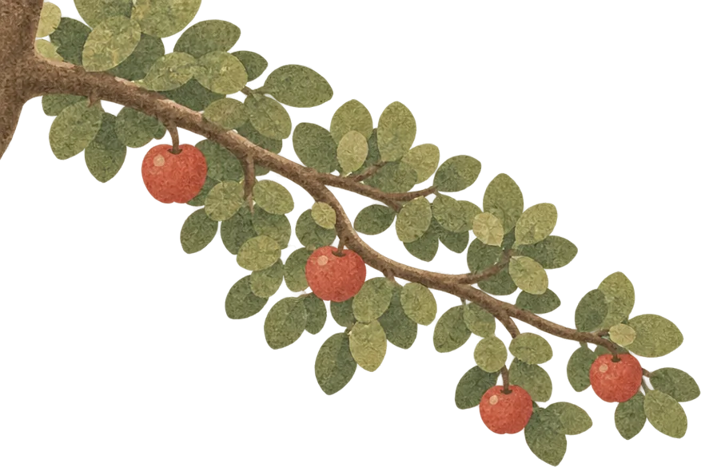
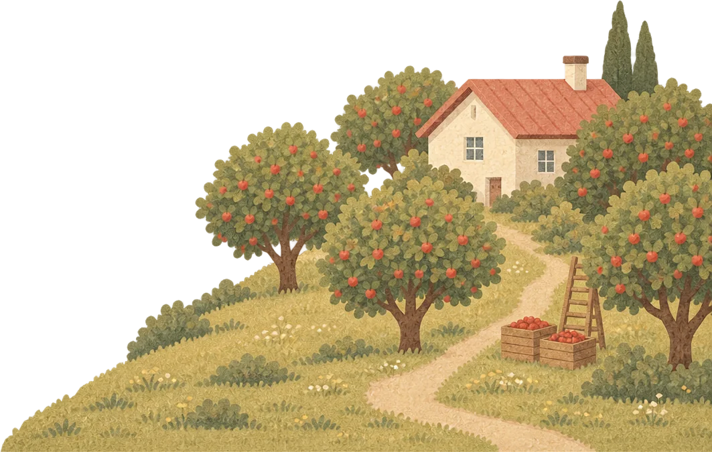
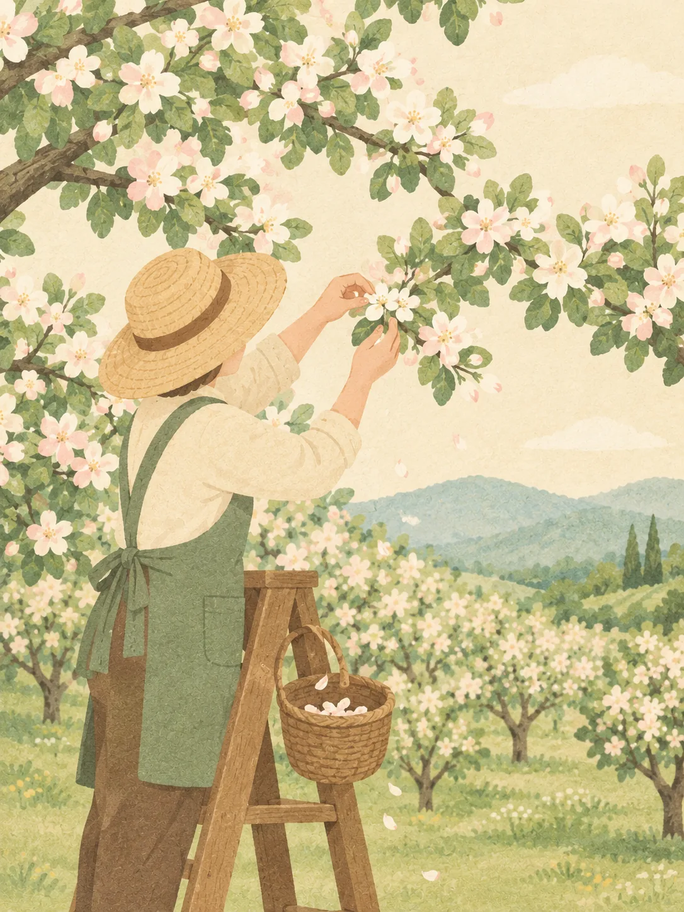
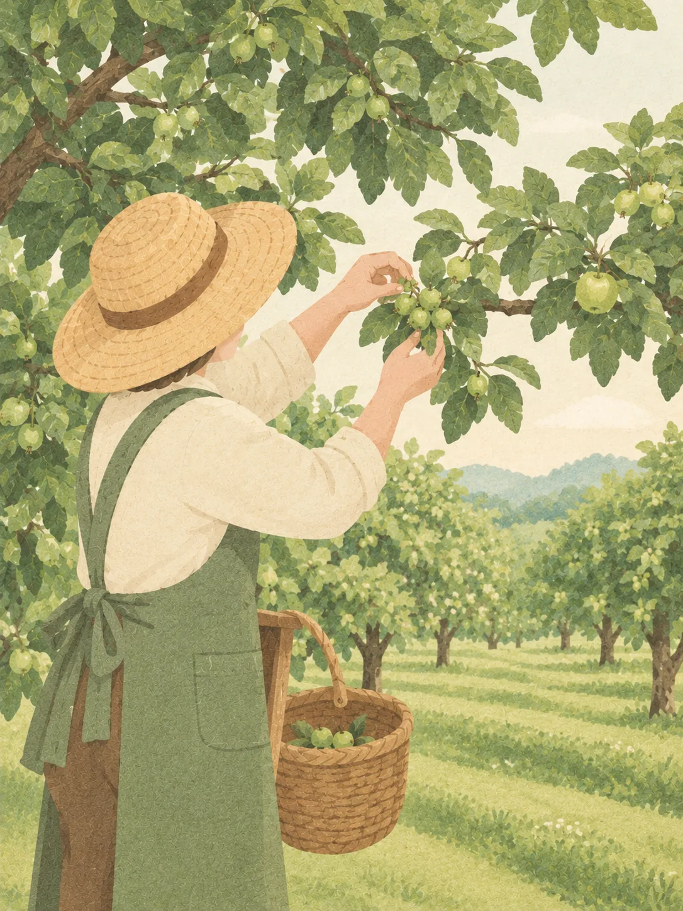
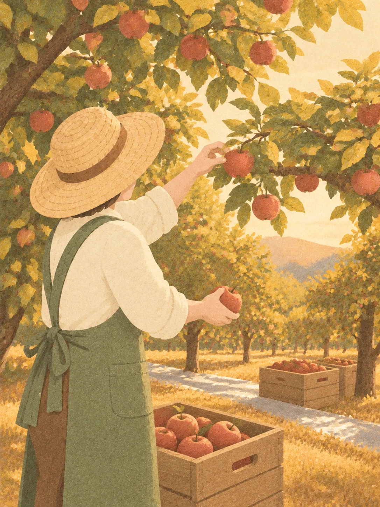
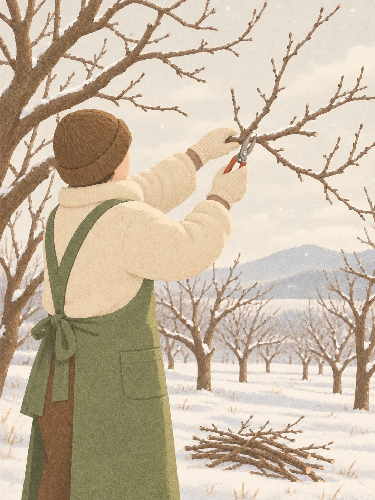
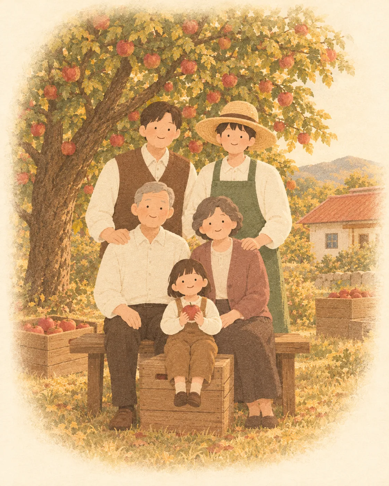
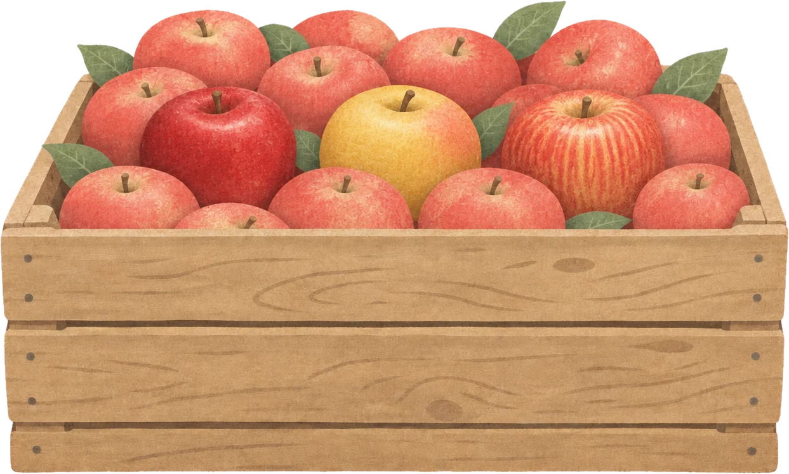

사과 한 알이 맺기까지
사과는 가을에 따지만, 맛은 봄부터 만들어져요.
APPLE HOUSE
경북 청송, 3대째 사과를 키우는 애플하우스입니다.

빨리 키우면 크기는 커져도 맛이 비어요. 그래서 저희는 계절마다 할 일을 미루지 않고, 기다려야 할 때는 기다립니다.

사과는 가을에 따지만, 맛은 봄부터 만들어져요.
APPLE HOUSE

첫 번째 계절, 봄
사월 말, 과수원이 하얗게 피어나면 가장 바빠져요. 한 꽃눈에서 피는 다섯 송이 중 가운데 가장 큰 꽃 하나만 남기고, 나머지는 손으로 하나하나 따 줘요.
“꽃을 딸 때가 제일 아까워요. 그래도 이 손이 가을의 맛을 정해요.”
한 알에 양분이 모여요.

두 번째 계절, 여름
유월이 되어 콩알만 한 열매가 맺히면 다시 한 번 골라요. 모양이 고르고 햇볕을 잘 받을 자리의 열매만 남겨, 한 가지에 한 알씩 키워요. 장마가 지나면 풀을 베어 나무가 숨 쉴 틈을 만들어 줘요.
“여름엔 하루에도 몇 번씩 나무 사이를 걸어요. 나무마다 표정이 달라요.”
크기와 맛이 고르게 자라요.

세 번째 계절, 가을
구월, 수확을 앞두고 나무 아래 은빛 반사 필름을 깔아요. 아래에서 올라온 햇빛이 사과 밑동까지 고루 붉게 물들여요. 다 익은 사과는 한 알씩 손으로 따서 바로 그늘에서 식혀요.
“사과는 작은 상처에도 금방 상해요. 그래서 끝까지 손으로 따요.”
상처 없이, 가장 맛있을 때 거둬요.

네 번째 계절, 겨울
십이월, 잎이 다 지고 나무가 쉬는 겨울이면 저희는 내년을 준비해요. 안쪽으로 엉킨 가지와 너무 높이 자란 가지를 잘라 햇빛과 바람이 고루 드나들게 해요.
“겨울에 자른 가지 하나가 내년 사과의 얼굴을 바꿔요.”
다음 해의 한 알이 준비돼요.
할아버지는 청송 산자락에 사과나무를 처음 심으셨어요.
낮에는 볕이 뜨겁고 밤에는 서늘한 이 땅이,
사과를 단단하고 달게 만든다는 걸 아셨거든요.
아버지는 그 나무 옆에 나무를 더 심으셨고,
저는 지금 그 나무들 사이에서 일 년을 보냅니다.
3대가 지나는 동안 바뀐 것도 많지만,
꽃을 솎고, 열매를 고르고, 손으로 따는 일만은 그대로예요.
조금 느려도, 그게 한 알을 제대로 키우는 방법이라고 배웠으니까요.
애플하우스 3대 농부 김한결

가을 석 달 동안, 세 가지 사과를 차례로 거둬요.

박스마다 크기가 고르니 타르트 모양이 일정하게 나와요. 그게 제일 편해요.
서울 성수동 베이커리 사장님
시나노골드를 처음 써 봤는데, 손님들이 이 노란 사과 뭐냐고 많이 물어보세요.
대구 디저트 카페 사장님
추석 선물로 보냈더니 받은 분들이 과수원 이야기 카드까지 좋아하셨어요.
IT 기업 총무팀 담당자
11월 부사는 겨울 내내 주스로 써도 맛이 떨어지지 않아요.
부산 주스 바 사장님
주문하면 수확 일정부터 알려 주셔서 메뉴 계획 세우기가 쉬워요.
제주 브런치 카페 사장님
남겨 주시면 수확 일정과 함께 이틀 안에 연락드릴게요.
054-000-0000 · hello@applehouse.kr
접수됐어요! 이틀 안에 연락드릴게요.
그동안 사과는 나무에서 조금 더 익어 갈게요.